Sustentabilidade técnica de software acadêmico:
Uma reflexão sobre o domínio de análise estática
Sustentabilidade técnica de software acadêmico: Uma reflexão sobre o domínio de análise estática
Apresentação para banca examinadora da defesa de mestrado do Programa de Pós-graduação em Ciência da Computação da Universidade Federal da Bahia, Salvador-Bahia, 19 de Dezembro de 2017.
Joenio Marques da Costa
Orientadora: Dra. Christina von Flach G. Chavez
Co-orientador: Dr. Paulo Roberto Miranda Meirelles
A Ciência depende de software
À medida que o software se torna uma tecnologia generalizada em praticamente todos os aspectos da condição humana, também é inserido firmemente no meio acadêmico, software analisa dados, simula o mundo real, e visualiza resultados.
GOBLE, C. Better software, better research. IEEE Internet Computing, IEEE, v. 18, n. 5, p. 4–8, 2014.
Motivação
O software acadêmico sofre de um fenômeno conhecido por desordem caótica disfuncional (“dysfunctional chaotic churn”) - DCD.
HOWISON, J. et al. Understanding the scientific software ecosystem and its impact: Current and future measures. Research Evaluation, v. 24, n. 4, p. 454–470, 2015. Disponível em: http://dx.doi.org/10.1093/reseval/rvv014i.
Desordem caótica disfuncional (DCD):
- Existência de muitos projetos com poucos usuários;
- Projetos com ciclos de vida curtos que se encerram junto ao financiamento inicial;
- Comunidades de usuários desconectadas e paralelas;
- Incompatibilidades entre os projetos de maneira persistente e imutável;
- Tentativas constantes e aparentemente não coordenadas de “reiniciar” tudo (re-boots).
Objetivo
Analisar os projetos de software acadêmico de análise estática e sua sustentabilidade técnica com o propósito de caracterizar com respeito a publicização, reconhecimento e ciclo de vida na perspectiva do cientista de software acadêmico no contexto das conferências de Engenharia de Software ASE e SCAM.
Questão de pesquisa
Questão: Como a desordem caótica disfuncional (DCD) pode explicar a sustentabilidade técnica dos projetos do ecossistema de software acadêmico de análise estática em termos de publicização, reconhecimento e estágio de evolução?
Software acadêmico
Todo software usado para coletar, processar ou analisar resultados de pesquisas com intenção de publicação na literatura acadêmica, incluindo desde protótipos escritos pelos próprios cientistas, a produtos completos desenvolvidos profissionalmente.
ALLEN, A. et al. Engineering academic software (dagstuhl perspectives workshop 16252). In: Dagstuhl Manifestos. [S.l.]: Schloss Dagstuhl-Leibniz-Zentrum fuer Informatik, 2017. v. 6, n. 1.
Análise estática
Análise estática é a atividade de obter informações acerca de um programa a partir do seu código-fonte, tem suas origens nos estudos e desenvolvimentos de compiladores.
CRUZ, D. d.; HENRIQUES, P. R.; PINTO, J. S. Code analysis: Past and present. 2009.
Sustentabilidade de software
Sustentabilidade é um tema multidisciplinar, sistêmico e com múltiplas dimensões:
- Individual
- Social
- Econômica
- Ambiental
- Técnica
BECKER, C. et al. The karlskrona manifesto for sustainability design. CoRR, abs/1410.6968, 2014. Disponı́vel em: hhttp://arxiv.org/abs/1410.6968i.
Sustentabilidade técnica de software
A dimensão técnica diz respeito a capacidade do software de perdurar e de continuar sendo suportado ao longo do tempo, implicando em qualidades de longevidade e manutenção.
VENTERS, C. C. et al. Software sustainability: The modern tower of babel. In: CEUR Workshop Proceedings. [S.l.: s.n.], 2014. v. 1216, p. 7–12.
Ecossistema de software acadêmico
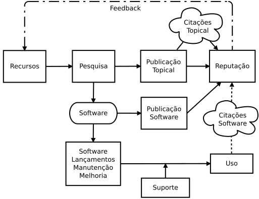
HOWISON, J.; HERBSLEB, J. D. Scientific software production: incentives and collaboration. In: Proceedings of the ACM 2011 conference on Computer supported cooperative work. [S.l.: s.n.], 2011. p. 513–522.
Estratégia de pesquisa
Estudo de caso exploratório, trabalho de campo, em ambiente natural, características principais:
- Com o foco num fenômeno, organização ou sistema em particular;
- Com um baixo nível de generalização e alto realismo do contexto;
- Sem intervenção do pesquisador no ambiente.
STOL, K.-J.; FITZGERALD, B. A holistic overview of software engineering research strategies. In: 3rd International Workshop on Conducting Empirical Studies in Industry. [S.l.: s.n.], 2015. p. 8.
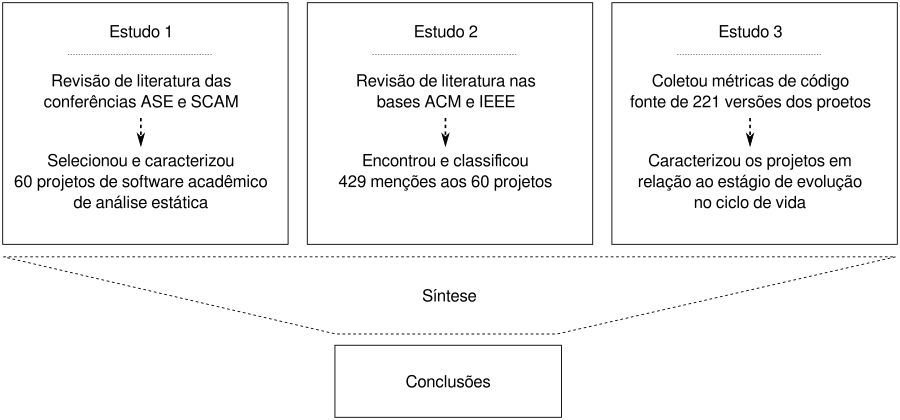
Estudo 1: Publicização
- 60 projetos de software acadêmico
- 40% indisponível para download
- 56% disponibiliza código fonte
- 35% utiliza licença de software livre
Estudo 2: Reconhecimento
- 429 menções
- 46% Cita
- 29% Usa
- 25% Contribui
- 14% menções do paper inicial
- 10% menções posterior
Estudo 3: Ciclo de vida
- 206 lançamentos (releases) com código fonte foram analisados
- …
Sistemas de software como sistemas complexos
a partir da sua estrutura interna sistemas de software podem ser caracterizados como um sistema complexo artificial
Modularidade
Uma medida do “número de arquivos” no código de um projeto, possui uma tendência de estabilizar ao longo do tempo. Utilizado como preditor de estágio de evolução de um projeto.
Fator de impacto
…
…
SC
complexidade estrutural
mede a complexidade estrutural de uma classe
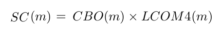
Metodologia
- Seleção e caracterização de ferramentas
- Extração de métricas de código-fonte
- Análise e interpretação dos valores das métricas
- Cálculo do score de similaridade
Hipóteses
- H1: É possível calcular valores de referência de métricas de código-fonte para ferramentas de análise estática a partir de um conjunto de softwares da academia e da indústria
- H2: Ferramentas de análise estática tendem a ter uma maior complexidade estrutural do que ferramentas de outros domínios de aplicação
- H3: Dentre as ferramentas de análise estática de código-fonte, aquelas desenvolvidas na indústria apresentam uma menor complexidade estrutural
Seleção e coleta
a seleção de ferramentas será feita através de uma revisão estruturada para ferramentas da academia e de uma busca livre para ferramentas da indústria
a análise de código-fonte e coleta de suas métricas será feita de forma automatizada utilizando a ferramenta Analizo
samate.nist.gov
Revisão estruturada
um processo disciplinado para seleção de artigos a partir de critérios bem definidos com o objetivo de encontrar ferramentas de análise estática de código-fonte
Caracterização das ferramentas
- Entrada - quais tipos de arquivos podem ser carregados na ferramenta
- Lançamentos (Releases) - quantos lançamentos por ano
- Linguagens suportadas - quais linguagens de programação a ferramenta suporta
- Tecnologia - quais tecnologias são usadas para procurar erros no código
- …
NOVAK, J.; KRAJNC, A. et al. Taxonomy of static code analysis tools. In: IEEE. MIPRO, 2010 Proceedings of the 33rd International Convention. [S.l.], 2010. p. 418–422.
http://analizo.org
Terceiro, A. et al. Analizo: an extensible multi-language source code analysis and visualization toolkit. In: CBSOFT-Ferramentas. [S.l.: s.n.], 2010.
Interpretação dos valores de métricas
as métricas serão coletadas para cada módulo de cada ferramenta, uma análise exploratória nos dará um entendimento inicial sobre a natureza dos dados
Resultados preliminares
✔ 315 artigos do SCAM avaliados e 9 ferramentas selecionadas
✔ 54 ferramentas da indústria avaliadas e 14 selecionadas
✔ 23 ferramentas analisadas de forma automatizada para coleta de métricas de código-fonte
✔ início da análise exploratória dos dados
✔ evolução inicial da ferramenta Analizo
Revisão estruturada do SCAM
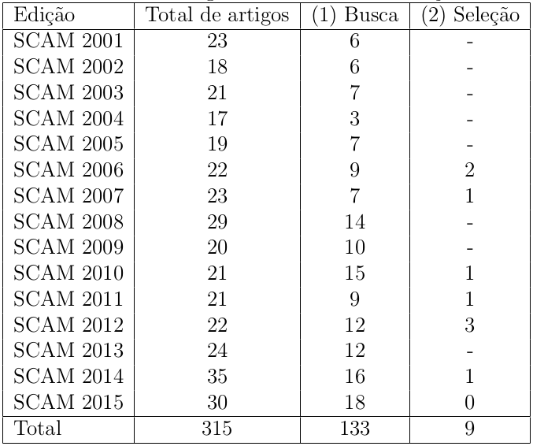
23 ferramentas selecionadas
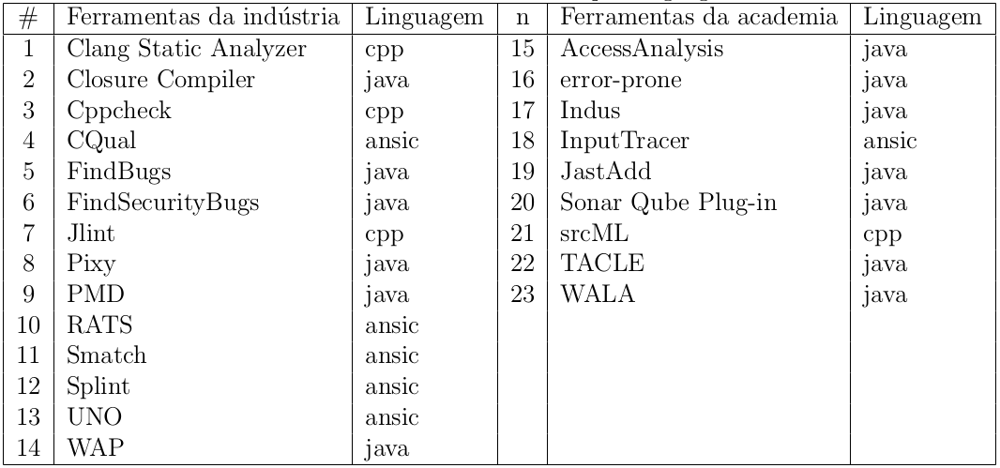
Análise exploratória
Percentis da métrica ACC
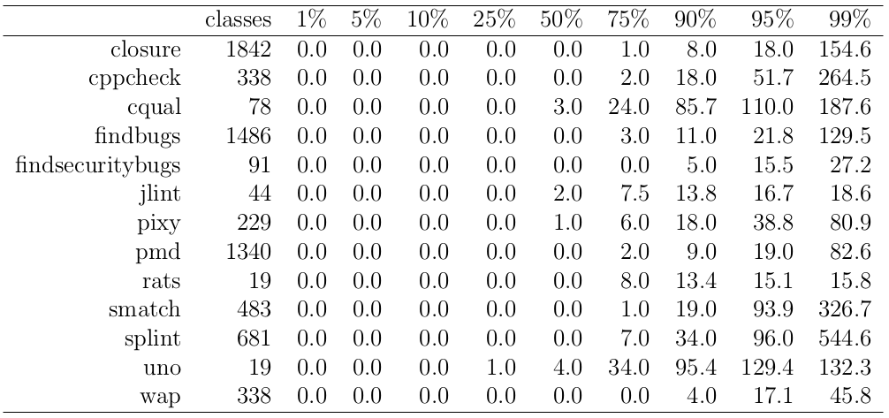
Média não é representativa
| 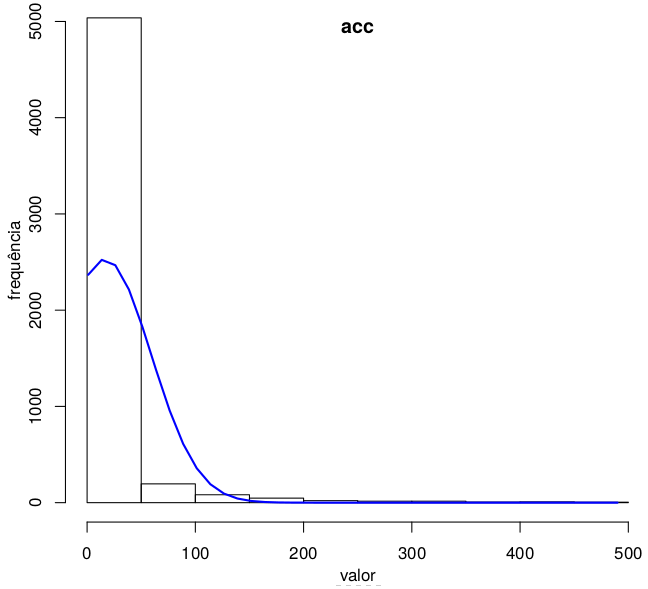 | 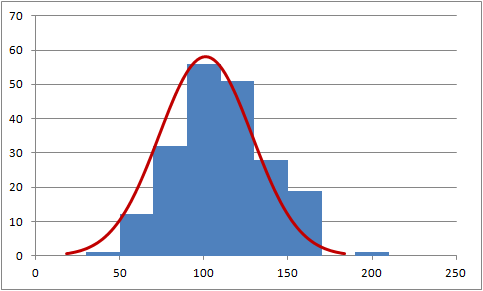 |
Lanza e Marinescu(2006) Michele Lanza e Radu Marinescu. Object-Oriented Metrics in Practice: Using Software Metrics to Characterize, Evaluate and Improve the Design of Object-Oriented Systems. Hardcover.
Métricas ACC e CBO no percentil 90
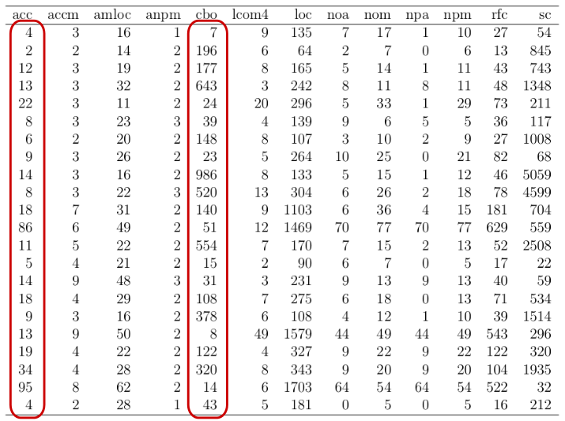
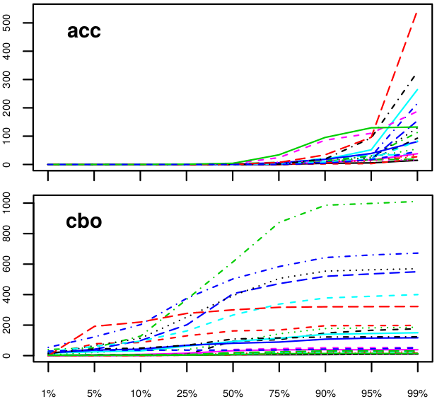
Evolução do Analizo
em 18 de Fevereiro de 2016 lançamos, no contexto deste trabalho, a versão 1.19.0 da ferramenta Analizo
Cronograma
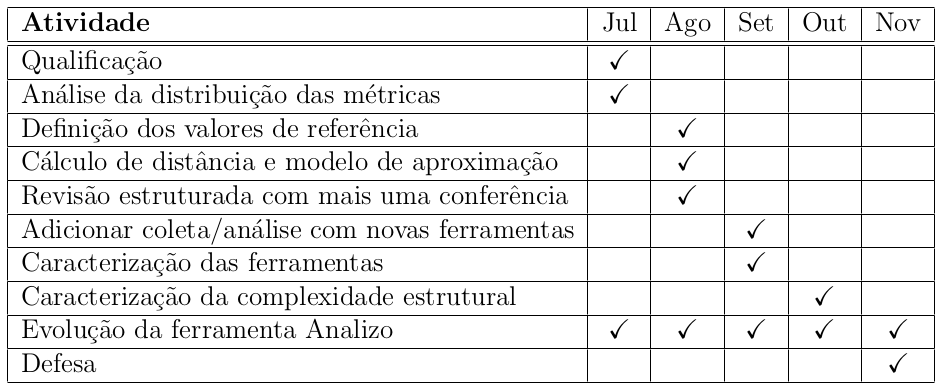
Obrigado!
joenio@joenio.me
Esta apresentação está disponível em:
http://joenio.me/slides/sustentabilidade-software-academico.html
(código-fonte: http://github.com/joenio/joenio.me)

Créditos
Imagens utilizadas nesta apresentação
- http://www.flickr.com/photos/odahumanity/4290838678
Histórico de apresentações
Onde e quando esta apresentação foi realizada
- 12 Julho 2016, UFBA DCC, Salvador, prévia da qualificação